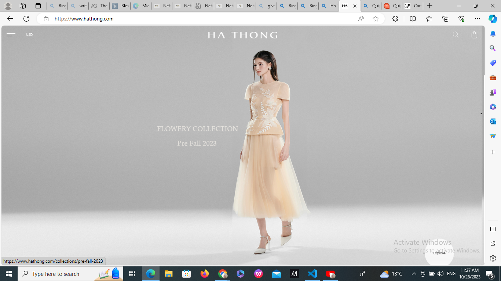
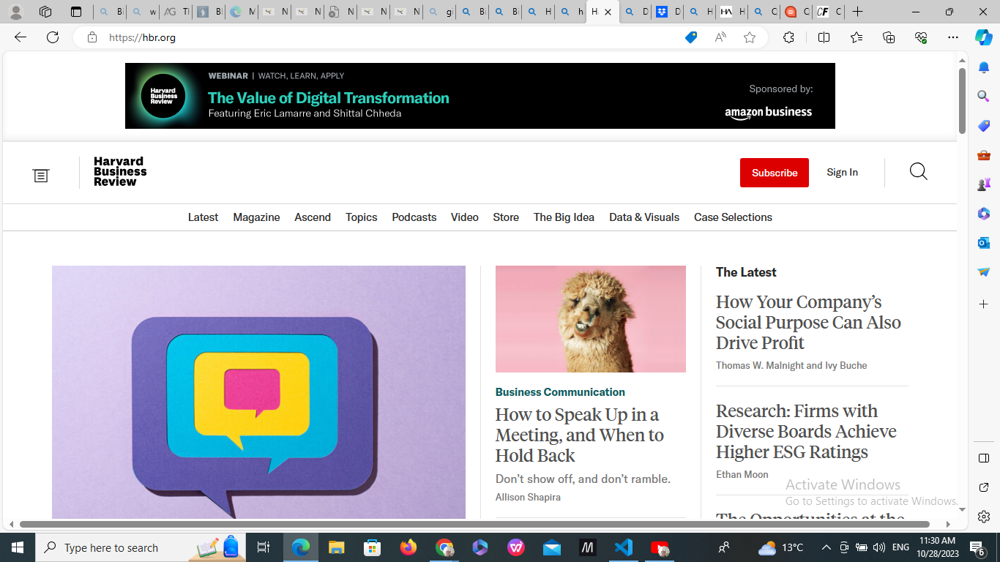

Visual Hierarchy
CAREERFOUNDRY
https://careerfoundry.com/The Careerfoundry website uses visual hierarchy to guide the user's attention to the most important elements on the page. The use of large headings, bold fonts, and contrasting colors helps to create a clear visual hierarchy.
White Space and Clean Design
Ha Thongs
https://www.hathong.com/
Ha Thongs website uses white space and clean design appropriately to create a simple and uncluttered user interface. The use of white space helps to create a sense of balance and harmony on the page.
Repetition
Harvard Business Review
https://hbr.org/
This Havard Business Review website uses repetition to create a consistent user experience across the site. The use of consistent fonts, colors, and layouts helps to create a sense of familiarity for the user.